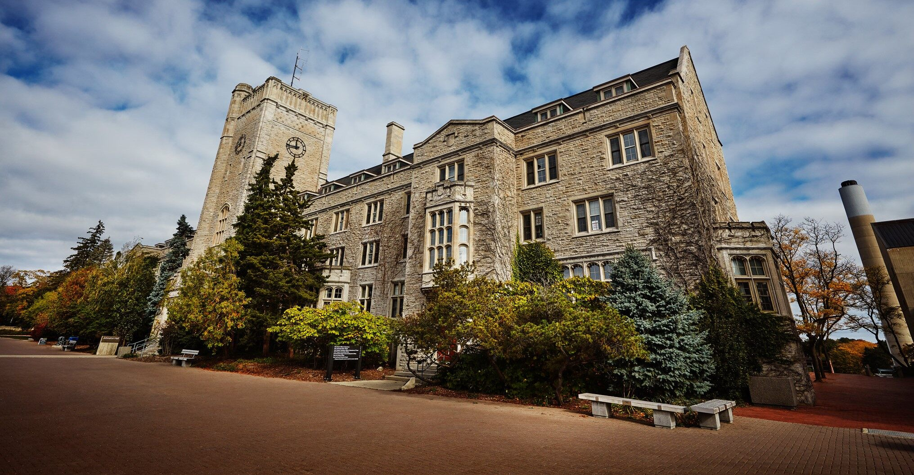

University of Guelph: Gillis Lab - Development Student
Introduction
My Winter 2021 work placement was at the University of Guelph where I worked in Dr. Dan Gillis’ lab on a COVID-19 agent based model. This role was completed remotely due to COVID-19.
About the Employer
Dr. Gillis is an Associate Professor at the University of Guelph who runs a lab in the School of Computer Science. There are many different individuals and teams of undergraduates, graduates, and postgraduates working in Dr. Gillis’ lab. Many of the ongoing projects in the lab are interdisciplinary with collaboration from other faculties at the University of Guelph. Lab activities often branch into research, community, and industry involvement. The University of Guelph funds and operates the Gillis lab at the Guelph campus, however, the lab relies largely on remote operations.
Job Description
At Dr. Gillis’ lab, I was continuing work on an agent based model that simulated COVID-19 infection spread that I was working on for a research project the prior academic semester. The project had been started in the Summer of 2020 by three undergraduate students at the University of Guelph.
The COVID-19 agent based model was being created with the intention to be used as a tool to determine how different factors mitigate the spread of COVID-19 within the City of Guelph. The model was based on geographic factors such as commercial and social locations, as well as infection and hospitalization rates for different age groups. Part of the hope of this project is that the model could be customized by the user to predict likely infection scenarios for potential future sicknesses.
My position in the lab was as a software developer where I was responsible for writing code in C++ and Python to complete a web application. Most of the development work that I completed during this term required me to have basic knowledge of C++ as well as a rudimentary understanding of statistics. The majority of my time was spent analyzing and reviewing past C++ code in the model for mathematical error or potential for improvement. This portion of my position proved quite challenging as the codebase would often have many underlying issues, requiring a significant amount of time to determine what the real problem in any given algorithm was. All the programming and problem skills I used for the development portion of my job I had learned through the previous term working on the same project as a research student, however, I did have to learn significantly more about C++ during this work term as previously I only had experience with the Python frontend of the web application. As I was developing the codebase I was also given the task of creating documentation for the application to provide users with the basics on how to use and update the application in the future. For the sake of easy transportability, this documentation was written in Microsoft Word as any potential academics in the future would have access to this software. Documentation is a skill I acquired from working on development teams in past co-op semesters.
In addition to development work, I completed a significant amount of research in order to ensure the agent based model was using appropriate variables and values according to existing medical data. This portion of my responsibilities was very similar to prior work I had completed for academic purposes.
Goals
Soft-Skill Goals
The first goal I set for myself this semester was to be organized and manage my time effectively as I would be working alone on the project with very little oversight/management. To complete this goal I had planned to use tools such as Trello and Microsoft Teams shared calendars to ensure everything was being completed on time as well as give my supervisor Dr. Gillis a quick way to monitor project progress. While the Trello board was useful for storing specific information during a large development effort early in the term, as time went on it became more of a nuisance than a benefit and so I switched to relying more on meetings with Dr. Gillis. These meetings would often cover progress from the past few weeks as well as consultations for statistical or algorithmic issues I had discovered in the model. I believe I met this goal as I was able to progress through issues efficiently and the agent based model reached a state of relatively proper function upon completion of my term. I think remote work definitely had a negative impact on time management to a degree as it was very easy to forgo structure in working hours when commuting was not a factor.
My second learning goal of the semester was to increase my knowledge of agent based models in computer science. Since I was in the role of developer for the COVID-19 agent based model it was incredibly important for me to have a thorough understanding of how agent based models function in order to ensure that the model outputs would be accurate. Throughout the 4 months that I was working on the model I often referred to other models I found through online literature, as well as discussed with both Dr. Gillis and my GIS (Geographical Information Systems) colleagues at the university how this specific model should function. Through discussions with these interdisciplinary colleagues, I was able to identify some of the issues with model functionality in the first couple of months of my work term. I was then able to apply this knowledge to fix logical errors that propagated throughout the model during the second half of my work term and developed a new confidence in the field of agent based models.
The final goal I had for the semester was focused on the research portion of my position. Since the COVID-19 agent based model heavily revolved around Canadian health data I needed to learn how local health units, as well as Health Canada, organize and delegate data and research. While researching this information I learned that the federal government provides most official pandemic-related health data and that local health groups such as the Wellington-Dufferin-Guelph Health Unit will often provide connections to federal or provincial data sources instead of localized data. As I got closer to completing the model I was able to use my knowledge of these data services to collect and use the best available information to represent testing scenarios for the model. This led to me providing vastly improved testing results and provided a good base for the theoretical values that may be used in future applications of the model. I think the research skills I learned from this goal will be helpful in future academic work, as well as possible R&D (research and development) positions in my future.
Conclusion
While working in Dr. Gillis’ lab I learned a significant amount about agent based models and the value that they provide as tools to the scientific community. Working on this model taught me a new respect for how difficult it can be for the medical community to produce accurate predictions based on available data given just how limited data can be in rapidly developing situations. I look forward to taking the research and analytic code review skills I developed this semester and applying them to my future academics and work.
Acknowledgments
I would like to thank Dr. Gillis for providing me with all the resources and support necessary to succeed in my role as a lab developer. The fun and social online environment Dr. Gillis provided lab members with showed me just how enjoyable remote work can be.